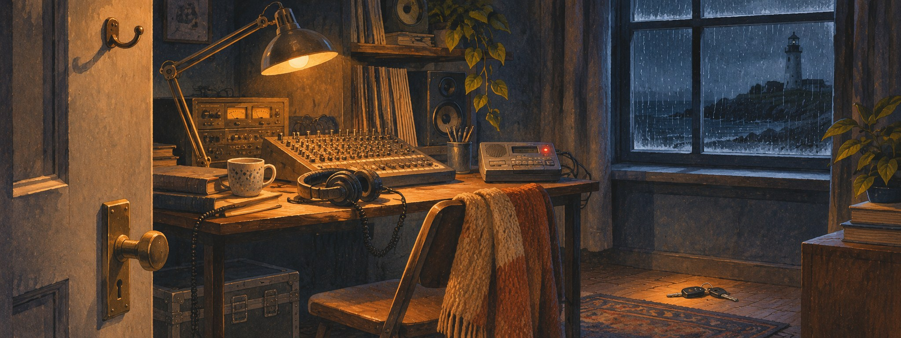

One verb, five jobs
"Leave it to me." Is the speaker going away, or taking responsibility?
In context
Six phrases, five gaps: one phrase is extra. Use the correct form and the right object (it, him, the flat …).
Case 5D · The lighthouse tape

Saturday, 06:10. Mara, a sound engineer, hasn’t answered her phone since last night. Her flatmate opens the door — the flat is empty. Inspect the flat: click on six things.
Deduction board
Find all six pieces of evidence to open the board.
1. Mara left the flat on purpose.
2. Mara drove to the lighthouse.
3. Mara slept at home last night.
4. Someone broke in and searched the flat.
5. Tom may know something important.
must have + done — I'm almost sure: The lights are off. They must have gone to bed.
might have + done — it's possible: He's late. He might have missed the bus.
can't have + done — I'm sure it's not true: She can't have seen the film — it isn't out yet.
Your report
1. What do you think happened last night? 2. Which two pieces of evidence matter most, and why? 3. What don’t we know yet — and what would you check first?
Think for 1 minute, then speak for 1–2 minutes.
The phone rings once and stops. A new message appears on the answering machine — but its time says 03:12. Mara’s voice, very quiet: “I’m inside the lighthouse. The door was open… and someone has been living here.”
The lighthouse has been closed since 1998.
Does this change your theory? What might have happened — and what should Tom do now?
Take a side
Choose one statement. Agree or disagree: give two arguments and one argument for the other side.
“A studio should release a game on the announced date, even if it isn’t ready. It can be fixed with patches later.”
Think for 1 minute, then speak for about 90 seconds.
“A horror game is scarier when it shows you less.”
Think for 1 minute, then speak for about 90 seconds.